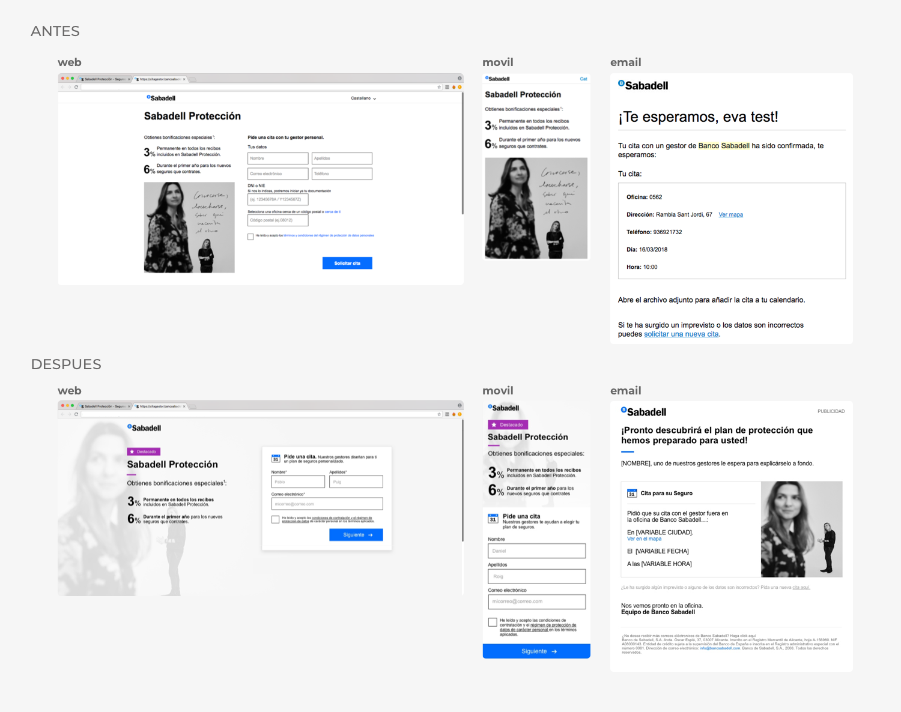
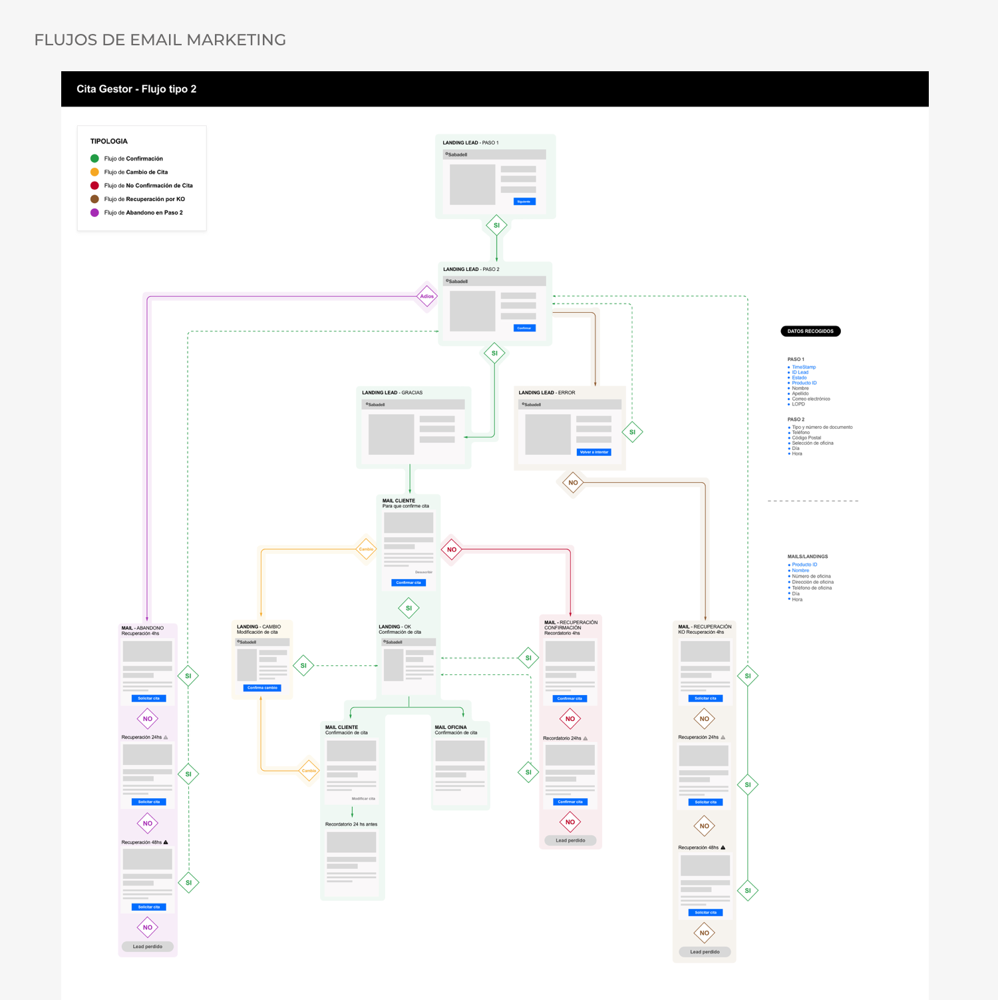
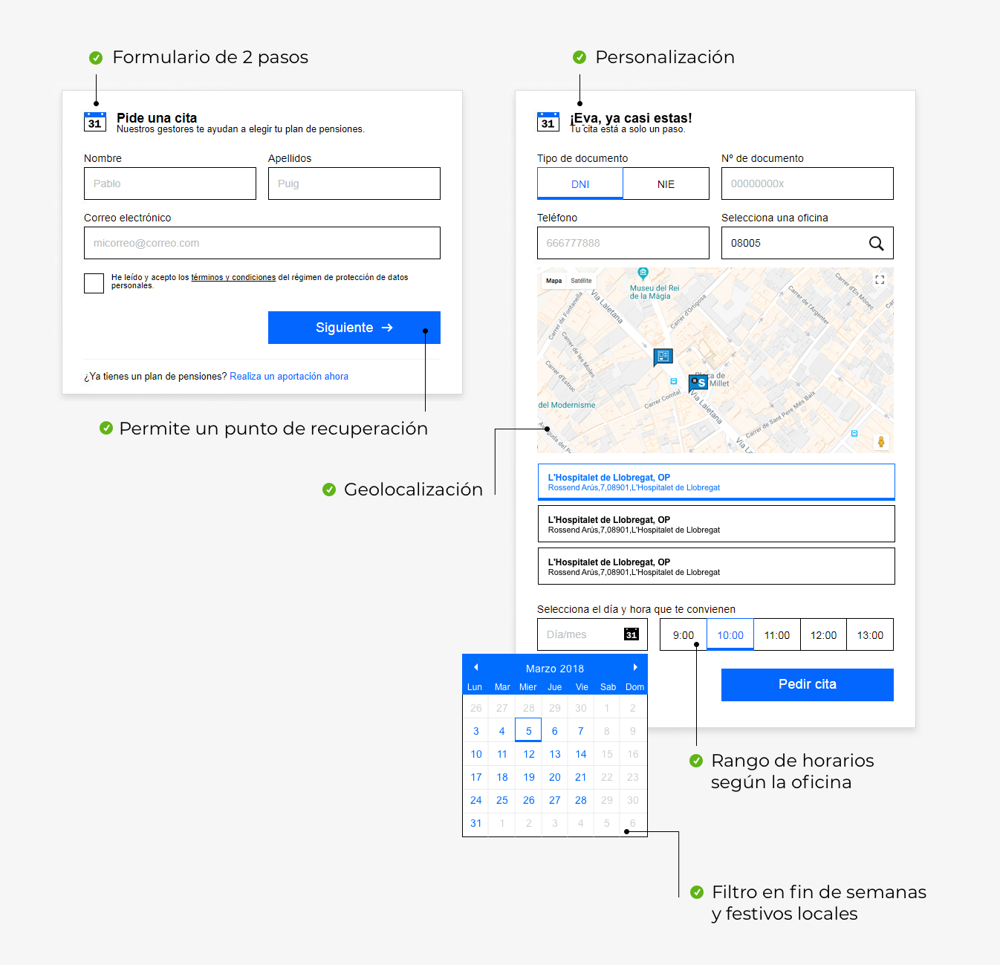
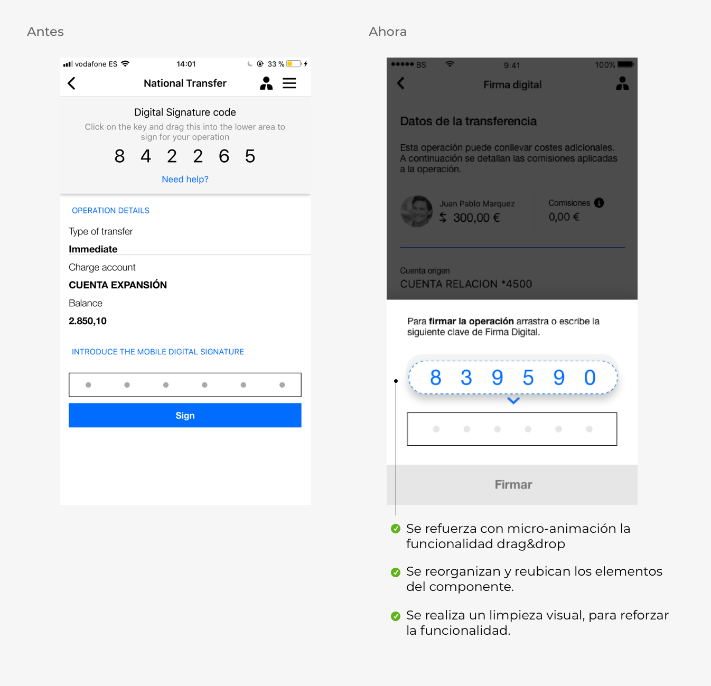

Proyecto Citas Gestor
Mi rol en este proyecto es de PM. Paso a contarles un poco más:
¿En qué consiste el proyecto?
Este proyecto consiste en la migración de servidor de 15 landing pages, que tienen como objetivo principal, vincular al usuario interesado en productos de banca con un gestor de oficina.
Esta migración implica varios
puntos claves:
- Al migrar las landings se deben recrear las campañas de email marketing en esta nueva herramienta.
- Mejorar la experiencia del usuario de las landings ya existentes.
- Evolucionar a un diseño mobile first.
- Sistematizar la creacion de estas landing pages, para ser utilizadas en un futuro en el departamento de marketing.
Objetivos del proyecto:
- Disminuir las caidas de servidor y la perdida de leads.
- Facilitar al usuario la experiencia de pedir una cita con un gestor.
- Aumentar el pedido de citas en oficina.
- Generar un sistema que agilize la produccion de este tipo de contenidos.
¿Como se llega a estas landings?
- Organicamente
- Por campañas SEM.
Usuarios:
Al ser landings pages de productos tan diferentes es muy variada la tipología de usuarios que encontramos.
Podemos decir que nuestro usuario principal son hombres y mujeres de 26 a 45 años interesados en productos bancarios.
A continuación les muestro el avance del proyecto y las mejoras implementadas.
"Evolucionando el UI"
Para acercarnos a nuestro usuario necesitabamos mostrarnos friendlys y profesionales. Conjuntamente con el equipo de diseño y content trabajamos en
hacer mas atractiva la gestión de una cita en oficina.
Aquí puedes ver el antes y después:

"Nuevo flujo de Email Marketing"
Se rehizo el flujo de emails de recuperación adaptandonos al nuevo proceso de cita.

"El usuario va primero"
Diferentes test nos demostraron que nuestro usuario es reacio a los formularios largos y complejos.
La decisión fue separar en 2 el formulario y de esta manera tambien poder implemantar la campaña de email mkt en el paso 1.

"Sistemas que facilitan el trabajo"
Anteriormente, la producción de esta tipologia de landing representaba un consumo de tiempo y recursos que podia ser menor.
La creación de este sistema que genera landings redujo el tiempo desde el diseño a la puesta en producción.
Este proyecto aún continua en curso.
Firma digital
Este proyecto consistió en buscar una solución al componente de firma digital de la app móvil.
Problema:
La firma digital es un tipo certificación de seguridad que se activa en la app móvil cuando un pago es hecho con tarjeta. El problema que se
detectó fue que el usuario no entendía su funcionamiento y sentía frustración al utilizarla.
Solución:
Se replanteó el diseño del componente desde su estructura, posicion en la pantalla y visual, acentuando las funcionalides tales como el drag&drop.
Actualmete está en desarrollo.
